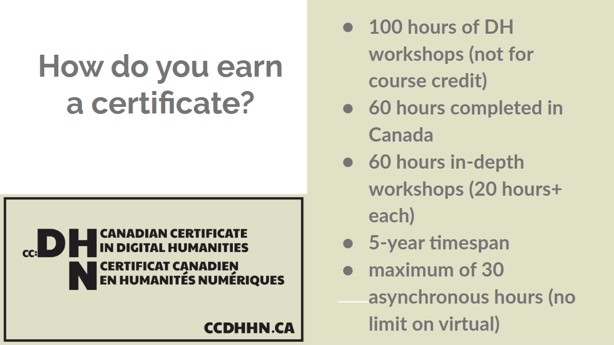
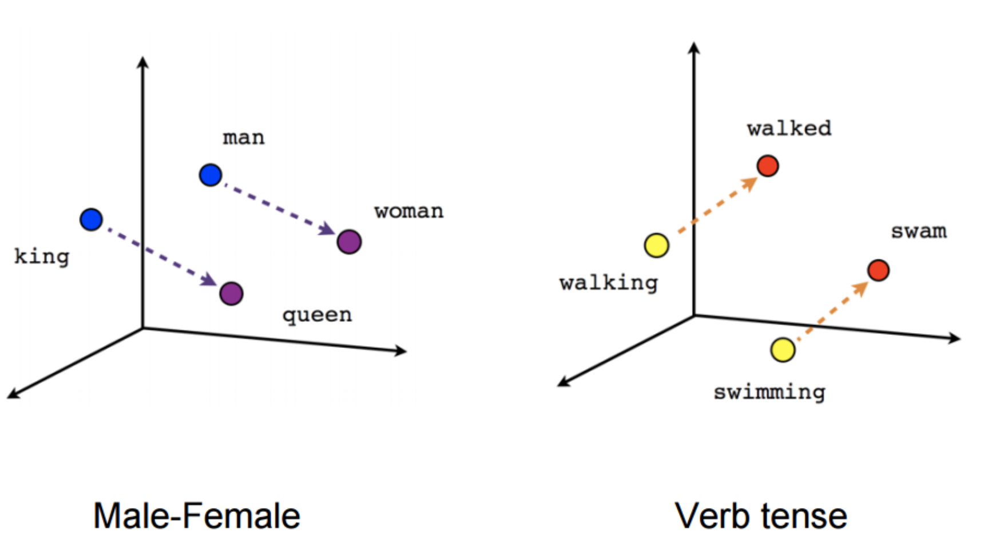
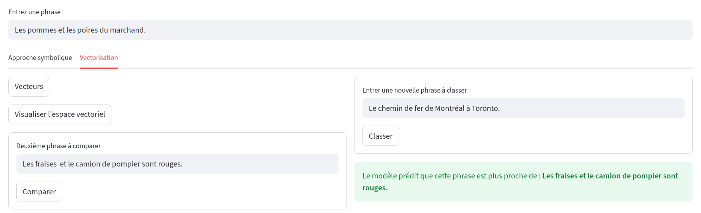
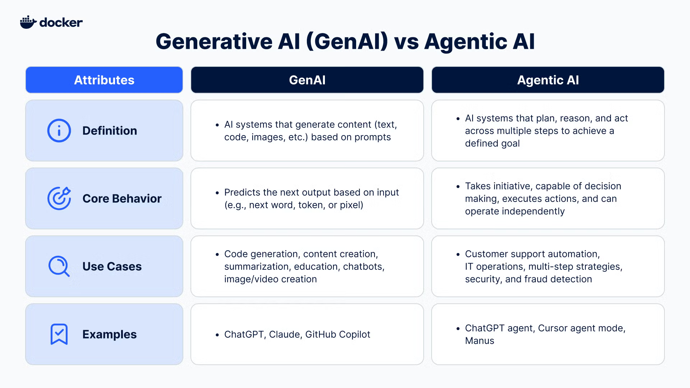
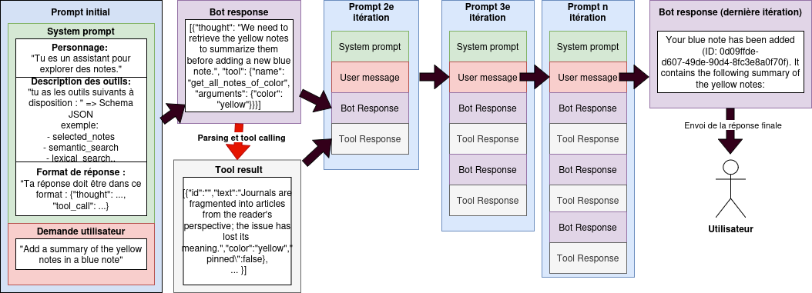
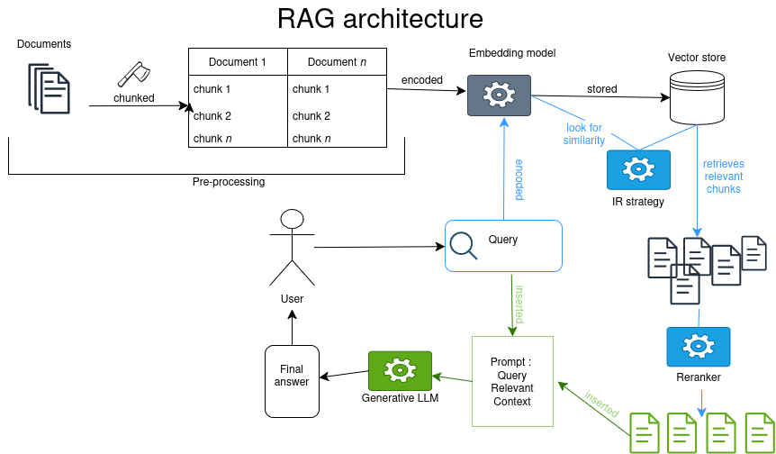
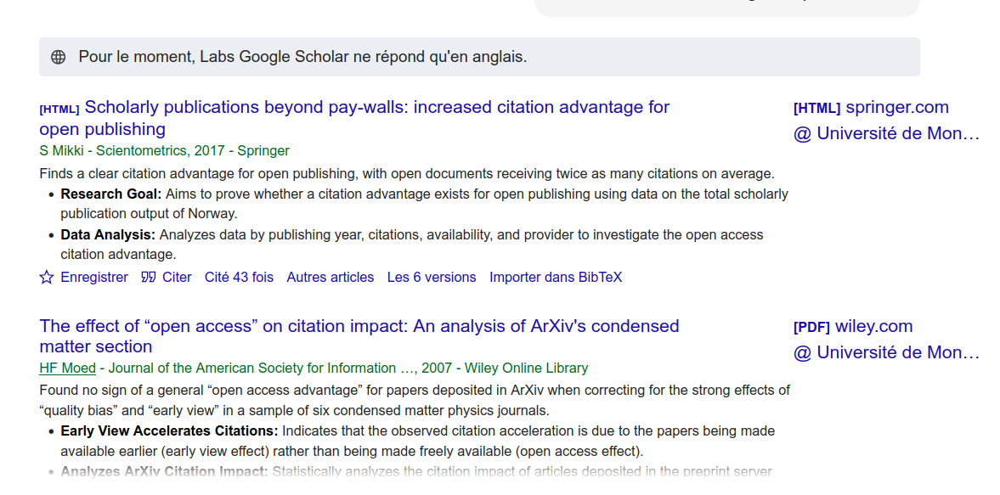
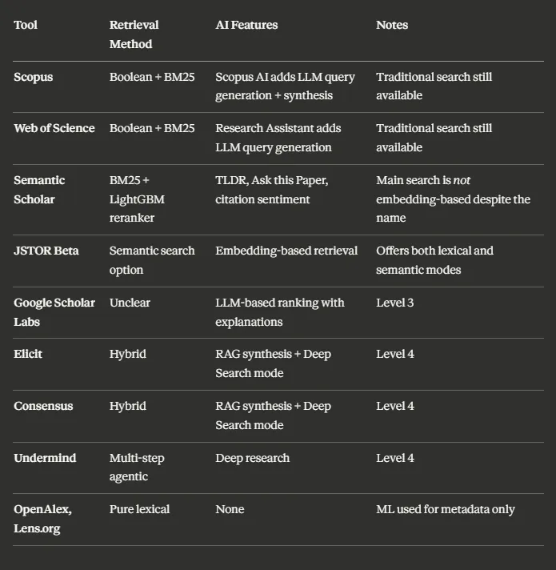

Atelier IA - Recherche d’information et synthèse des sources
2026-01-15
Programme de la séance
- Introduction et rappels
- Les systèmes complexes intégrant de l’IA: les agents IA
- le RAG
- RAG et applications généralistes
- Les Assistants de recherche ‘AI powered’
Présentation et objectif des ateliers
Format : 4 séances de 2heures, sans inscription, participation libre (à justifier pour le certificat des Humanités Numériques)
1h à 1h30 de théorie + 30 minutes à 1h d’échanges.
Objectifs de la série d’atelier :
- Comprendre les fondamentaux de l’IA et de son histoire
- Obtenir des notions critiques sur le fonctionnement profond des outils
- Cerner les enjeux actuels sur des thématiques qui affectent la recherche et l’enseignement
Certificat canadien en Humanités Numériques


Les fondamentaux : rappels
Qu’est ce que l’IA ?
Des programmes informatiques que nous estimons à la hauteur de l’intelligence humaine ? Le développement des technologies fait évoluer cette définition de l’intelligence non seulement artificielle mais aussi humaine.
‘IA’ depuis 5 ans, a remplacé le ‘numérique’ des années 2010, et le ‘cyberespace’ des années 1990 et 2000.(Vitali-Rosati 2025).
Définition pratique pour ces ateliers: “un programme informatique qui effectue une prédiction.” ## Rappels de l’introduction
- Les programmes d’IA réfèrent à des processus algorithmiques variés et pas seulement à des chatbots type ChatGPT.
- L’IA n’est pas une nouvelle discipline (terme de 1956 lors de la Dartmouth Summer Research Project on Artificial Intelligence par Marvin Minsky et John McCarthy).
- L’article Computing Machinery and Intelligence de Turing (1950) a orienté la discipline vers un modèle ‘chatbot’.
- Les ‘saisons de l’IA’ suivent des phases d’approbation publique et de désintérêt pour le terme et les technologies associées.
- Ce qu’on fait entrer dans la catégorie d’“intelligent” a changé : le calcul savant est-il moins intelligent que le bavardage ?
Rappels historiques sur l’IA
- Deux grandes approches en IA : une approche déductive (IA symbolique, système expert) vs. approche inductive (IA connexionniste, modèle de langue basé sur des plongements de mots ou embeddings = vecteurs).
- Un système expert peut être aussi complexe et énergivore qu’un LLM.
- Un LLM (large language model) est la modélisation sous forme de vecteurs de chaque élément d’un grand corpus (token ~mot) par rapport à cet ensemble.



Les LLMs en contexte
- Pour les LLMs, la ‘compréhension’ du monde n’est basée sur aucun référent ou aucune règle définie : les réponses sont probabilistes, elles sont donc plausibles et convaincantes parce qu’elles donnent plus de chance à des tournures de phrases courantes dans leur jeu d’entraînement.
- Les hallucinations ne sont pas des anomalies, ce sont des erreurs que l’on qualifie a posteriori comme telle.
- Après l’apprentissage de son corpus d’entrainement, une étape de reinforcement learning donne une saveur ou personnalité à un modèle.
- Les LLMs reflètent les intérêts économiques des concepteurices des applications qui les intègrent : nature ‘sycophantique’ avérée.
- On peut influencer le calcul de probabilité d’un modèle (température, top-k, seed) et donc sa personnalité (déterministe vs. créatif).
- On peut aussi ‘orienter’ le comportement d’un modèle avec un system prompt sans modifier les embeddings ou l’algorithme de prédiction.
- Chatbots = interfaces en langue naturelle : l’exploitation des capacités inductives d’un LLMs ne nécessite pas de passer par une telle interface. Ex : classification avec de l’apprentissage machine (machine learning).
Des systèmes d’IA complexes
Quelle complexité ?
IA, dite générative ou d’automatisation de la prédiction de token, effectue aujourd’hui des tâches complexes à deux niveaux:
interprétation d’une instruction donnée en langue naturelle (avec son lot d’ambiguïté).
intégration de LLM dans des process ou pipelines qui impliquent des interactions en chaînes:
- Systèmes agentiques “agentic AI”
- RAG
Exemple de système d’IA complexe: les agents
- un agent est une série d’appels à un LLM : l’agent est ce qui permet d’enchaîner input et output jusqu’à complétion d’une tâche.
Autrement dit, un agent est une “IA” qui se répond à elle-même.
On parlera de système agentique quand plusieurs agents interagissent.
Demonstration d’un système agentic: assistant à l’exploration et la création de note sur un tableau interactif.
Définitions hypée des IA agentiques

Description des IA agentiques par Docker (Irwin and Xu 2025)
Schéma de l’agent conversationnel de la démo

Diagramme du fonctionnement d’un “système agentique” à un seul agent (en franglais)
Applications de chat actuelles
ChatGPT et consort sont des applications qui utilisent un LLM (la représentation figée de la langue en vecteurs) pour faire de la prédiction de tokens (génération). Depuis GPT-3.5 et sa sortie publique en décembre 2022, l’application ChatGPT ne se contente pas d’envoyer seul le prompt de l’utilisateur pour interroger le LLM: dans le prompt global, on trouve un ensemble d’instructions préliminaires (le system prompt) et d’informations complémentaires comme l’historique des échanges (chat history).
Depuis décembre 2024, la fonction search permet de lancer une requête sur internet => RAG
Recherche d’information et synthèse des sources
Retrieval Augmented Generation
Limites du LLM:
- représentation figée sur les données d’entraînement (= mémoire implicite ne peut pas être mise à jour)
- fenêtre contextuelle limitée (ajd jusque 120 000 tokens, en réalité déclin après ~30 000 tokens)
-> perte de fiabilité
Le RAG : architecture de système d’IA qui repose sur une base de connaissance externe dans le but d’améliorer les réponses d’une IA générative sans demander d’entrainement supplémentaire (fine tuning).(Lewis et al. 2021) (Facebook, University College London, New York University)

Superbe diagramme d’un RAG
RAG en bref
Requête d’une base de données1 avec des vieilles méthodes de Recherche d’Information éprouvées (TF-iDF ou similarité cosinus) + intégration des morceaux extraits au prompt. Le LLM effectue une synthèse
Points d’attention sur le RAG
- Jeux de données externes peut aussi être biaisé,
- Ajout de couches d’interprétation,
- Dissémination de l’information: l’information se trouve dans plusieurs chunks
- Angles morts: information importante dans un chunk non extrait
RAG des applications généralistes
ChatGPT
We collaborated extensively with the news industry and carefully listened to feedback from our global publisher partners, including Associated Press, Axel Springer, Condé Nast, Dotdash Meredith, Financial Times, GEDI, Hearst, Le Monde, News Corp, Prisa (El País), Reuters, The Atlantic, Time, and Vox Media. Any website or publisher can choose to appear(opens in a new window) in ChatGPT search. If you’d like to share feedback, please email us at publishers-feedback@openai.com. — OpenAI (2024)
- Reformulation de l’entrée utilisateur en une ou plusieurs requêtes
- Requêtes envoyées à Bing et Shopify1 et sur leur base de données interne (médias partenaires).
- Re-ranking ?
- Réponse généré depuis le prompt contenant les informations extraites (+ system prompt, chat history etc.)
Le Chat de Mistral
Partenariat avec l’AFP depuis janvier 2025 (AFP 2025). Opacité quant à la méthode de recherche d’information sur internet1
Assistants de recherche AI ou AI-powered search engine
Intro
Foisonnement d’assistants de recherche, ou de lit review assistants.
- Google Scholar Labs (décembre 25)
- SemanticScholar
- JSTOR
- Primo Research Assistant (spécialisé bibliothèque)
- Web of Science Research Assistant
- Scopus AI
- scite.ai
- undermind.ai
- reLIS de l’Udem : Bigendako and Syriani (2026)
Qu’est-ce qu’on entend par IA dans ce cas ?
Expansion de requête
Méthodes sans IA : thésaurus, ontologies
Query expansion avec un LLM: “Écrit 10 variants de la requête suivantes”
Méthodes de Recherche d’information
- Méthodes classiques (non IA ?):
- recherche booléenne: ET/OU
- recherche par caractère1 : ‘citation’ retourne ‘The decrease in uncited articles and its effect on the concentration of citations’
- recherche lexicale: TF-iDF et BM25 -> correspondance d’un terme par rapportaa à sa présence dans le corpus.
- Recherche sémantique (semantic search/dense retrieval) utilisation des plongements lexicaux de modèles types encodeur (BERT) ou décodeur (e.g. GPT) lors de la recherche: représentation vectorielle de la requête et de l’entièreté de la base de données -> mesure de similarité cosinus.
-> Impact sur la manière de requêter: 1. par mot-clé, 2. ‘en langue naturelle’.
Reranking
Possiblement du ML classique ou un algorithme sur mesure (ex: semantic Scholar ’emphasize )
Enrichissement de résultats
Ex: Google Scholar Labs

Google Scholar Labs
Synthèse des articles
Deep research : revue de littérature complète à partir de plusieurs itérations (IA agentique)
ex: undermind.ai

Undermind.ai
Overview par Aaron Tay

Synthèse des outils d’IA (Tay 2025)
Discussion
Annonces
Prochains ateliers débogue:
Le matériel informatique : trésor ou ordure ? > 29 janvier, même heure même lieu > Rester à la fine pointe de la technologie, ça coûte cher. Mais est-ce même utile ? Est-ce que ça se fait de seulement remplacer la batterie de son ordinateur, ou un disque pour rendre sa machine plus rapide ? C’est souvent plus facile qu’on le pense ! Avec cette démo, on vous aide à garder votre machine plus longtemps, et votre argent dans vos poches !
Documentation des nouvelles pratiques liées à l’utilisation de l’IA : préconisations pour les SHS >12 mars, même heure même lieu